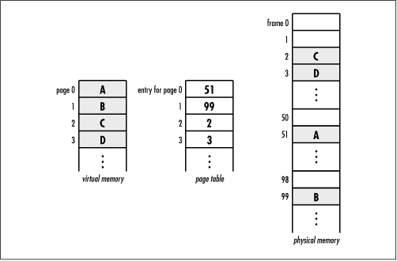

5.4 Linked List Example: Frame
Management
An interesting application of linked
lists is found in the way some systems support virtual memory. Virtual memory is a
mapping of address space that allows a process (a running
program) to execute without being completely in physical memory, the real memory of
the system. One advantage of this is that a process can make
use of an address space that is much larger than that which
the physical memory of the system would allow otherwise.
Another advantage is that multiple processes can share the
memory of the system while running concurrently.
A process running in virtual memory deals
with virtual addresses. These are addresses that seem like
physical addresses to the process, but that the system must
translate before using. Address translation takes place using
a page table and is fast due to dedicated hardware.
Each process has its own page table that maps pages of its virtual address space to
frames in physical memory. When
a process references a particular virtual address, the
appropriate entry in its page table is inspected to determine
in which physical frame the page resides (see Figure
5.5). When a process references a virtual address not yet
in a frame, a page fault occurs and a frame is allocated in
physical memory. Why pages of a process are removed from
physical memory is another matter. One occasion for removing a
page, however, is when a page is accessed infrequently
relative to other pages and its frame is needed elsewhere.

This example
addresses the management of frames that has just been
described. For this, two functions are presented, alloc_ frame
and free_ frame (see Example
5.3). The alloc_ frame and
free_ frame functions employ a
linked list to maintain the frames that are available to be
allocated. The alloc_ frame
function retrieves the number of a free frame from a list of
available frames. Given a specific page, this number is placed
in the page table to indicate in which physical frame the page
is to reside. The free_ frame
function accepts a frame number and places it back into the
list of available frames once a page has been removed from
physical memory. Both functions assume that before either is
called, the operating system has inserted into the list all
frames that it wishes to make available. The example for
circular lists later in this chapter addresses what happens
when alloc_ frame is called and
the list is empty.
A
linked list is a good way to manage frames because frame
allocation involves frequent insertions and deletions, and
these operations are performed at the head of the list. The
runtime complexity of both alloc_
frame and free_ frame is
O (1) because the two functions
simply call list_rem_next and list_ins_next respectively, which are both O (1) operations.
Example 5.3.
Implementation of Functions for Managing Frames /*****************************************************************************
* *
* ------------------------------- frames.c ------------------------------- *
* *
*****************************************************************************/
#include <stdlib.h>
#include "frames.h"
#include "list.h"
/*****************************************************************************
* *
* ------------------------------ alloc_frame ----------------------------- *
* *
*****************************************************************************/
int alloc_frame(List *frames) {
int frame_number,
*data;
if (list_size(frames) == 0)
/**************************************************************************
* *
* Return that there are no frames available. *
* *
**************************************************************************/
return -1;
else {
if (list_rem_next(frames, NULL, (void **)&data) != 0)
/***********************************************************************
* *
* Return that a frame could not be retrieved. *
* *
***********************************************************************/
return -1;
else {
/***********************************************************************
* *
* Store the number of the available frame. *
* *
***********************************************************************/
frame_number = *data;
free(data);
}
}
return frame_number;
}
/*****************************************************************************
* *
* ------------------------------ free_frame ------------------------------ *
* *
*****************************************************************************/
int free_frame(List *frames, int frame_number) {
int *data;
/*****************************************************************************
* *
* Allocate storage for the frame number. *
* *
*****************************************************************************/
if ((data = (int *)malloc(sizeof(int))) == NULL)
return -1;
/*****************************************************************************
* *
* Put the frame back in the list of available frames. *
* *
*****************************************************************************/
*data = frame_number;
if (list_ins_next(frames, NULL, data) != 0)
return -1;
return 0;
} |